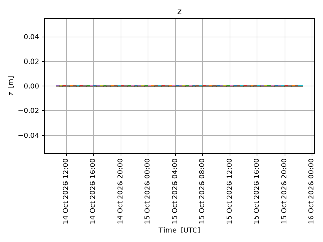
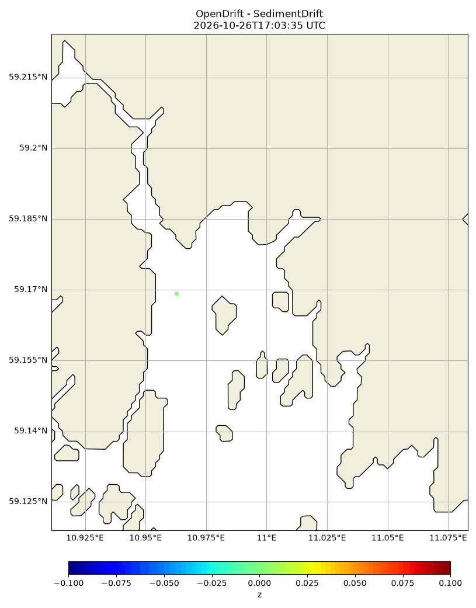

Note
Go to the end to download the full example code.
Sediment drift from Glomma river outlet
from datetime import timedelta, datetime
from opendrift.models.sedimentdrift import SedimentDrift
o = SedimentDrift(loglevel=20) # 0 for debug output
if False: # Using constant south-westwards current and wind
o.set_config('environment:fallback:x_sea_water_velocity', -.05)
o.set_config('environment:fallback:y_sea_water_velocity', -.1)
o.set_config('environment:fallback:y_wind', -6)
o.set_config('environment:fallback:x_wind', -2)
o.set_config('environment:fallback:sea_floor_depth_below_sea_level', 100) # 100m depth
else: # Using live data from Thredds
o.add_readers_from_list([
'https://thredds.met.no/thredds/dodsC/fou-hi/norkystv3_800m_m00_be'])
17:03:35 INFO opendrift:569: OpenDriftSimulation initialised (version 1.14.11 / v1.14.12-66-g07283eb)
Adding some diffusion
o.set_config('drift:current_uncertainty', .2)
o.set_config('drift:wind_uncertainty', 2)
o.set_config('vertical_mixing:diffusivitymodel', 'windspeed_Large1994')
#o.set_config('vertical_mixing:diffusivitymodel', 'environment')
Source of sediments at Glomma river outlet
lat=59.169194
lon=10.962920
o.seed_elements(lon=lon, lat=lat, number=10000,
time=[datetime.now(), datetime.now()+timedelta(hours=48)],
terminal_velocity=-.001) # 1 mm/s settling speed
o.run(time_step=600, time_step_output=1800, duration=timedelta(hours=36))
17:03:35 INFO opendrift.models.basemodel.environment:203: Adding a global landmask from GSHHG
17:03:42 INFO opendrift.models.basemodel.environment:227: Fallback values will be used for the following variables which have no readers:
17:03:42 INFO opendrift.models.basemodel.environment:230: x_sea_water_velocity: 0.000000
17:03:42 INFO opendrift.models.basemodel.environment:230: y_sea_water_velocity: 0.000000
17:03:42 INFO opendrift.models.basemodel.environment:230: sea_surface_height: 0.000000
17:03:42 INFO opendrift.models.basemodel.environment:230: upward_sea_water_velocity: 0.000000
17:03:42 INFO opendrift.models.basemodel.environment:230: x_wind: 0.000000
17:03:42 INFO opendrift.models.basemodel.environment:230: y_wind: 0.000000
17:03:42 INFO opendrift.models.basemodel.environment:230: sea_surface_wave_stokes_drift_x_velocity: 0.000000
17:03:42 INFO opendrift.models.basemodel.environment:230: sea_surface_wave_stokes_drift_y_velocity: 0.000000
17:03:42 INFO opendrift.models.basemodel.environment:230: sea_surface_wave_period_at_variance_spectral_density_maximum: 0.000000
17:03:42 INFO opendrift.models.basemodel.environment:230: sea_surface_wave_mean_period_from_variance_spectral_density_second_frequency_moment: 0.000000
17:03:42 INFO opendrift.models.basemodel.environment:230: ocean_vertical_diffusivity: 0.020000
17:03:42 INFO opendrift.models.basemodel.environment:230: ocean_mixed_layer_thickness: 50.000000
17:03:42 INFO opendrift.models.basemodel.environment:230: sea_floor_depth_below_sea_level: 10000.000000
17:03:42 INFO opendrift:1922: Storing previous values of element property lon because of condition (('general:coastline_action', 'in', ['stranding', 'previous']), 'or', ('general:seafloor_action', 'in', ['previous']))
17:03:42 INFO opendrift:1922: Storing previous values of element property lat because of condition (('general:coastline_action', 'in', ['stranding', 'previous']), 'or', ('general:seafloor_action', 'in', ['previous']))
17:03:42 INFO opendrift:958: Using existing reader for land_binary_mask to move elements to ocean
17:03:42 INFO opendrift:990: All points are in ocean
17:03:42 INFO opendrift:2238: 2026-10-26 17:03:35.975441 - step 1 of 216 - 35 active elements (0 deactivated)
17:03:42 INFO opendrift.readers:67: Opening file with xr.open_dataset
17:03:44 INFO opendrift.readers.reader_netCDF_CF_generic:340: Detected dimensions: {'x': 'X', 'y': 'Y', 'z': 'depth', 'time': 'time'}
17:03:44 INFO opendrift.readers.basereader:175: Variable x_sea_water_velocity will be rotated from eastward_sea_water_velocity
17:03:44 INFO opendrift.readers.basereader:175: Variable y_sea_water_velocity will be rotated from northward_sea_water_velocity
17:03:44 INFO opendrift.readers.basereader:175: Variable x_wind will be rotated from eastward_wind
17:03:44 INFO opendrift.readers.basereader:175: Variable y_wind will be rotated from northward_wind
17:03:47 INFO opendrift:2238: 2026-10-26 17:13:35.975441 - step 2 of 216 - 70 active elements (0 deactivated)
17:03:47 INFO opendrift:2238: 2026-10-26 17:23:35.975441 - step 3 of 216 - 105 active elements (0 deactivated)
17:03:47 INFO opendrift:2238: 2026-10-26 17:33:35.975441 - step 4 of 216 - 139 active elements (0 deactivated)
17:03:47 INFO opendrift:2238: 2026-10-26 17:43:35.975441 - step 5 of 216 - 174 active elements (0 deactivated)
17:03:47 INFO opendrift:2238: 2026-10-26 17:53:35.975441 - step 6 of 216 - 209 active elements (0 deactivated)
17:03:47 INFO opendrift:2238: 2026-10-26 18:03:35.975441 - step 7 of 216 - 244 active elements (0 deactivated)
17:03:49 INFO opendrift:2238: 2026-10-26 18:13:35.975441 - step 8 of 216 - 278 active elements (0 deactivated)
17:03:49 INFO opendrift:2238: 2026-10-26 18:23:35.975441 - step 9 of 216 - 313 active elements (0 deactivated)
17:03:50 INFO opendrift:2238: 2026-10-26 18:33:35.975441 - step 10 of 216 - 348 active elements (0 deactivated)
17:03:50 INFO opendrift:2238: 2026-10-26 18:43:35.975441 - step 11 of 216 - 382 active elements (0 deactivated)
17:03:50 INFO opendrift:2238: 2026-10-26 18:53:35.975441 - step 12 of 216 - 417 active elements (0 deactivated)
17:03:50 INFO opendrift:2238: 2026-10-26 19:03:35.975441 - step 13 of 216 - 452 active elements (0 deactivated)
17:03:51 INFO opendrift:2238: 2026-10-26 19:13:35.975441 - step 14 of 216 - 487 active elements (0 deactivated)
17:03:51 INFO opendrift:2238: 2026-10-26 19:23:35.975441 - step 15 of 216 - 521 active elements (0 deactivated)
17:03:51 INFO opendrift:2238: 2026-10-26 19:33:35.975441 - step 16 of 216 - 556 active elements (0 deactivated)
17:03:51 INFO opendrift:2238: 2026-10-26 19:43:35.975441 - step 17 of 216 - 591 active elements (0 deactivated)
17:03:51 INFO opendrift:2238: 2026-10-26 19:53:35.975441 - step 18 of 216 - 625 active elements (0 deactivated)
17:03:51 INFO opendrift:2238: 2026-10-26 20:03:35.975441 - step 19 of 216 - 660 active elements (0 deactivated)
17:03:53 INFO opendrift:2238: 2026-10-26 20:13:35.975441 - step 20 of 216 - 695 active elements (0 deactivated)
17:03:53 INFO opendrift:2238: 2026-10-26 20:23:35.975441 - step 21 of 216 - 730 active elements (0 deactivated)
17:03:53 INFO opendrift:2238: 2026-10-26 20:33:35.975441 - step 22 of 216 - 764 active elements (0 deactivated)
17:03:54 INFO opendrift:2238: 2026-10-26 20:43:35.975441 - step 23 of 216 - 799 active elements (0 deactivated)
17:03:54 INFO opendrift:2238: 2026-10-26 20:53:35.975441 - step 24 of 216 - 834 active elements (0 deactivated)
17:03:54 INFO opendrift:2238: 2026-10-26 21:03:35.975441 - step 25 of 216 - 868 active elements (0 deactivated)
17:03:56 INFO opendrift:2238: 2026-10-26 21:13:35.975441 - step 26 of 216 - 903 active elements (0 deactivated)
17:03:56 INFO opendrift:2238: 2026-10-26 21:23:35.975441 - step 27 of 216 - 938 active elements (0 deactivated)
17:03:56 INFO opendrift:2238: 2026-10-26 21:33:35.975441 - step 28 of 216 - 973 active elements (0 deactivated)
17:03:56 INFO opendrift:2238: 2026-10-26 21:43:35.975441 - step 29 of 216 - 1007 active elements (0 deactivated)
17:03:56 INFO opendrift:2238: 2026-10-26 21:53:35.975441 - step 30 of 216 - 1042 active elements (0 deactivated)
17:03:56 INFO opendrift:2238: 2026-10-26 22:03:35.975441 - step 31 of 216 - 1077 active elements (0 deactivated)
17:03:58 INFO opendrift:2238: 2026-10-26 22:13:35.975441 - step 32 of 216 - 1112 active elements (0 deactivated)
17:03:58 INFO opendrift:2238: 2026-10-26 22:23:35.975441 - step 33 of 216 - 1146 active elements (0 deactivated)
17:03:58 INFO opendrift:2238: 2026-10-26 22:33:35.975441 - step 34 of 216 - 1181 active elements (0 deactivated)
17:03:58 INFO opendrift:2238: 2026-10-26 22:43:35.975441 - step 35 of 216 - 1216 active elements (0 deactivated)
17:03:58 INFO opendrift:2238: 2026-10-26 22:53:35.975441 - step 36 of 216 - 1250 active elements (0 deactivated)
17:03:58 INFO opendrift:2238: 2026-10-26 23:03:35.975441 - step 37 of 216 - 1285 active elements (0 deactivated)
17:04:00 INFO opendrift:2238: 2026-10-26 23:13:35.975441 - step 38 of 216 - 1320 active elements (0 deactivated)
17:04:00 INFO opendrift:2238: 2026-10-26 23:23:35.975441 - step 39 of 216 - 1355 active elements (0 deactivated)
17:04:00 INFO opendrift:2238: 2026-10-26 23:33:35.975441 - step 40 of 216 - 1389 active elements (0 deactivated)
17:04:00 INFO opendrift:2238: 2026-10-26 23:43:35.975441 - step 41 of 216 - 1424 active elements (0 deactivated)
17:04:00 INFO opendrift:2238: 2026-10-26 23:53:35.975441 - step 42 of 216 - 1459 active elements (0 deactivated)
17:04:01 INFO opendrift:2238: 2026-10-27 00:03:35.975441 - step 43 of 216 - 1493 active elements (0 deactivated)
17:04:02 INFO opendrift:2238: 2026-10-27 00:13:35.975441 - step 44 of 216 - 1528 active elements (0 deactivated)
17:04:02 INFO opendrift:2238: 2026-10-27 00:23:35.975441 - step 45 of 216 - 1563 active elements (0 deactivated)
17:04:02 INFO opendrift:2238: 2026-10-27 00:33:35.975441 - step 46 of 216 - 1598 active elements (0 deactivated)
17:04:02 INFO opendrift:2238: 2026-10-27 00:43:35.975441 - step 47 of 216 - 1632 active elements (0 deactivated)
17:04:03 INFO opendrift:2238: 2026-10-27 00:53:35.975441 - step 48 of 216 - 1667 active elements (0 deactivated)
17:04:03 INFO opendrift:2238: 2026-10-27 01:03:35.975441 - step 49 of 216 - 1702 active elements (0 deactivated)
17:04:04 INFO opendrift:2238: 2026-10-27 01:13:35.975441 - step 50 of 216 - 1736 active elements (0 deactivated)
17:04:04 INFO opendrift:2238: 2026-10-27 01:23:35.975441 - step 51 of 216 - 1771 active elements (0 deactivated)
17:04:05 INFO opendrift:2238: 2026-10-27 01:33:35.975441 - step 52 of 216 - 1806 active elements (0 deactivated)
17:04:05 INFO opendrift:2238: 2026-10-27 01:43:35.975441 - step 53 of 216 - 1841 active elements (0 deactivated)
17:04:05 INFO opendrift:2238: 2026-10-27 01:53:35.975441 - step 54 of 216 - 1875 active elements (0 deactivated)
17:04:05 INFO opendrift:2238: 2026-10-27 02:03:35.975441 - step 55 of 216 - 1910 active elements (0 deactivated)
17:04:07 INFO opendrift:2238: 2026-10-27 02:13:35.975441 - step 56 of 216 - 1945 active elements (0 deactivated)
17:04:07 INFO opendrift:2238: 2026-10-27 02:23:35.975441 - step 57 of 216 - 1979 active elements (0 deactivated)
17:04:07 INFO opendrift:2238: 2026-10-27 02:33:35.975441 - step 58 of 216 - 2014 active elements (0 deactivated)
17:04:07 INFO opendrift:2238: 2026-10-27 02:43:35.975441 - step 59 of 216 - 2049 active elements (0 deactivated)
17:04:07 INFO opendrift:2238: 2026-10-27 02:53:35.975441 - step 60 of 216 - 2084 active elements (0 deactivated)
17:04:07 INFO opendrift:2238: 2026-10-27 03:03:35.975441 - step 61 of 216 - 2118 active elements (0 deactivated)
17:04:09 INFO opendrift:2238: 2026-10-27 03:13:35.975441 - step 62 of 216 - 2153 active elements (0 deactivated)
17:04:09 INFO opendrift:2238: 2026-10-27 03:23:35.975441 - step 63 of 216 - 2188 active elements (0 deactivated)
17:04:09 INFO opendrift:2238: 2026-10-27 03:33:35.975441 - step 64 of 216 - 2223 active elements (0 deactivated)
17:04:10 INFO opendrift:2238: 2026-10-27 03:43:35.975441 - step 65 of 216 - 2257 active elements (0 deactivated)
17:04:10 INFO opendrift:2238: 2026-10-27 03:53:35.975441 - step 66 of 216 - 2292 active elements (0 deactivated)
17:04:10 INFO opendrift:2238: 2026-10-27 04:03:35.975441 - step 67 of 216 - 2327 active elements (0 deactivated)
17:04:12 INFO opendrift:2238: 2026-10-27 04:13:35.975441 - step 68 of 216 - 2361 active elements (0 deactivated)
17:04:12 INFO opendrift:2238: 2026-10-27 04:23:35.975441 - step 69 of 216 - 2396 active elements (0 deactivated)
17:04:12 INFO opendrift:2238: 2026-10-27 04:33:35.975441 - step 70 of 216 - 2431 active elements (0 deactivated)
17:04:12 INFO opendrift:2238: 2026-10-27 04:43:35.975441 - step 71 of 216 - 2466 active elements (0 deactivated)
17:04:12 INFO opendrift:2238: 2026-10-27 04:53:35.975441 - step 72 of 216 - 2500 active elements (0 deactivated)
17:04:12 INFO opendrift:2238: 2026-10-27 05:03:35.975441 - step 73 of 216 - 2535 active elements (0 deactivated)
17:04:14 INFO opendrift:2238: 2026-10-27 05:13:35.975441 - step 74 of 216 - 2570 active elements (0 deactivated)
17:04:14 INFO opendrift:2238: 2026-10-27 05:23:35.975441 - step 75 of 216 - 2604 active elements (0 deactivated)
17:04:14 INFO opendrift:2238: 2026-10-27 05:33:35.975441 - step 76 of 216 - 2639 active elements (0 deactivated)
17:04:15 INFO opendrift:2238: 2026-10-27 05:43:35.975441 - step 77 of 216 - 2674 active elements (0 deactivated)
17:04:15 INFO opendrift:2238: 2026-10-27 05:53:35.975441 - step 78 of 216 - 2709 active elements (0 deactivated)
17:04:15 INFO opendrift:2238: 2026-10-27 06:03:35.975441 - step 79 of 216 - 2743 active elements (0 deactivated)
17:04:17 INFO opendrift:2238: 2026-10-27 06:13:35.975441 - step 80 of 216 - 2778 active elements (0 deactivated)
17:04:17 INFO opendrift:2238: 2026-10-27 06:23:35.975441 - step 81 of 216 - 2813 active elements (0 deactivated)
17:04:17 INFO opendrift:2238: 2026-10-27 06:33:35.975441 - step 82 of 216 - 2847 active elements (0 deactivated)
17:04:18 INFO opendrift:2238: 2026-10-27 06:43:35.975441 - step 83 of 216 - 2882 active elements (0 deactivated)
17:04:18 INFO opendrift:2238: 2026-10-27 06:53:35.975441 - step 84 of 216 - 2917 active elements (0 deactivated)
17:04:18 INFO opendrift:2238: 2026-10-27 07:03:35.975441 - step 85 of 216 - 2952 active elements (0 deactivated)
17:04:20 INFO opendrift:2238: 2026-10-27 07:13:35.975441 - step 86 of 216 - 2986 active elements (0 deactivated)
17:04:20 INFO opendrift:2238: 2026-10-27 07:23:35.975441 - step 87 of 216 - 3021 active elements (0 deactivated)
17:04:20 INFO opendrift:2238: 2026-10-27 07:33:35.975441 - step 88 of 216 - 3056 active elements (0 deactivated)
17:04:21 INFO opendrift:2238: 2026-10-27 07:43:35.975441 - step 89 of 216 - 3090 active elements (0 deactivated)
17:04:21 INFO opendrift:2238: 2026-10-27 07:53:35.975441 - step 90 of 216 - 3125 active elements (0 deactivated)
17:04:21 INFO opendrift:2238: 2026-10-27 08:03:35.975441 - step 91 of 216 - 3160 active elements (0 deactivated)
17:04:24 INFO opendrift:2238: 2026-10-27 08:13:35.975441 - step 92 of 216 - 3195 active elements (0 deactivated)
17:04:24 INFO opendrift:2238: 2026-10-27 08:23:35.975441 - step 93 of 216 - 3229 active elements (0 deactivated)
17:04:25 INFO opendrift:2238: 2026-10-27 08:33:35.975441 - step 94 of 216 - 3264 active elements (0 deactivated)
17:04:25 INFO opendrift:2238: 2026-10-27 08:43:35.975441 - step 95 of 216 - 3299 active elements (0 deactivated)
17:04:25 INFO opendrift:2238: 2026-10-27 08:53:35.975441 - step 96 of 216 - 3334 active elements (0 deactivated)
17:04:26 INFO opendrift:2238: 2026-10-27 09:03:35.975441 - step 97 of 216 - 3368 active elements (0 deactivated)
17:04:27 INFO opendrift:2238: 2026-10-27 09:13:35.975441 - step 98 of 216 - 3403 active elements (0 deactivated)
17:04:28 INFO opendrift:2238: 2026-10-27 09:23:35.975441 - step 99 of 216 - 3438 active elements (0 deactivated)
17:04:28 INFO opendrift:2238: 2026-10-27 09:33:35.975441 - step 100 of 216 - 3472 active elements (0 deactivated)
17:04:28 INFO opendrift:2238: 2026-10-27 09:43:35.975441 - step 101 of 216 - 3507 active elements (0 deactivated)
17:04:28 INFO opendrift:2238: 2026-10-27 09:53:35.975441 - step 102 of 216 - 3542 active elements (0 deactivated)
17:04:29 INFO opendrift:2238: 2026-10-27 10:03:35.975441 - step 103 of 216 - 3577 active elements (0 deactivated)
17:04:31 INFO opendrift:2238: 2026-10-27 10:13:35.975441 - step 104 of 216 - 3611 active elements (0 deactivated)
17:04:31 INFO opendrift:2238: 2026-10-27 10:23:35.975441 - step 105 of 216 - 3646 active elements (0 deactivated)
17:04:31 INFO opendrift:2238: 2026-10-27 10:33:35.975441 - step 106 of 216 - 3681 active elements (0 deactivated)
17:04:32 INFO opendrift:2238: 2026-10-27 10:43:35.975441 - step 107 of 216 - 3715 active elements (0 deactivated)
17:04:32 INFO opendrift:2238: 2026-10-27 10:53:35.975441 - step 108 of 216 - 3750 active elements (0 deactivated)
17:04:32 INFO opendrift:2238: 2026-10-27 11:03:35.975441 - step 109 of 216 - 3785 active elements (0 deactivated)
17:04:34 INFO opendrift:2238: 2026-10-27 11:13:35.975441 - step 110 of 216 - 3820 active elements (0 deactivated)
17:04:34 INFO opendrift:2238: 2026-10-27 11:23:35.975441 - step 111 of 216 - 3854 active elements (0 deactivated)
17:04:35 INFO opendrift:2238: 2026-10-27 11:33:35.975441 - step 112 of 216 - 3889 active elements (0 deactivated)
17:04:35 INFO opendrift:2238: 2026-10-27 11:43:35.975441 - step 113 of 216 - 3924 active elements (0 deactivated)
17:04:35 INFO opendrift:2238: 2026-10-27 11:53:35.975441 - step 114 of 216 - 3958 active elements (0 deactivated)
17:04:35 INFO opendrift:2238: 2026-10-27 12:03:35.975441 - step 115 of 216 - 3993 active elements (0 deactivated)
17:04:37 INFO opendrift:2238: 2026-10-27 12:13:35.975441 - step 116 of 216 - 4028 active elements (0 deactivated)
17:04:38 INFO opendrift:2238: 2026-10-27 12:23:35.975441 - step 117 of 216 - 4063 active elements (0 deactivated)
17:04:38 INFO opendrift:2238: 2026-10-27 12:33:35.975441 - step 118 of 216 - 4097 active elements (0 deactivated)
17:04:39 INFO opendrift:2238: 2026-10-27 12:43:35.975441 - step 119 of 216 - 4132 active elements (0 deactivated)
17:04:39 INFO opendrift:2238: 2026-10-27 12:53:35.975441 - step 120 of 216 - 4167 active elements (0 deactivated)
17:04:39 INFO opendrift:2238: 2026-10-27 13:03:35.975441 - step 121 of 216 - 4201 active elements (0 deactivated)
17:04:41 INFO opendrift:2238: 2026-10-27 13:13:35.975441 - step 122 of 216 - 4236 active elements (0 deactivated)
17:04:42 INFO opendrift:2238: 2026-10-27 13:23:35.975441 - step 123 of 216 - 4271 active elements (0 deactivated)
17:04:42 INFO opendrift:2238: 2026-10-27 13:33:35.975441 - step 124 of 216 - 4306 active elements (0 deactivated)
17:04:42 INFO opendrift:2238: 2026-10-27 13:43:35.975441 - step 125 of 216 - 4340 active elements (0 deactivated)
17:04:43 INFO opendrift:2238: 2026-10-27 13:53:35.975441 - step 126 of 216 - 4375 active elements (0 deactivated)
17:04:43 INFO opendrift:2238: 2026-10-27 14:03:35.975441 - step 127 of 216 - 4410 active elements (0 deactivated)
17:04:45 INFO opendrift:2238: 2026-10-27 14:13:35.975441 - step 128 of 216 - 4445 active elements (0 deactivated)
17:04:45 INFO opendrift:2238: 2026-10-27 14:23:35.975441 - step 129 of 216 - 4479 active elements (0 deactivated)
17:04:46 INFO opendrift:2238: 2026-10-27 14:33:35.975441 - step 130 of 216 - 4514 active elements (0 deactivated)
17:04:46 INFO opendrift:2238: 2026-10-27 14:43:35.975441 - step 131 of 216 - 4549 active elements (0 deactivated)
17:04:47 INFO opendrift:2238: 2026-10-27 14:53:35.975441 - step 132 of 216 - 4583 active elements (0 deactivated)
17:04:47 INFO opendrift:2238: 2026-10-27 15:03:35.975441 - step 133 of 216 - 4618 active elements (0 deactivated)
17:04:49 INFO opendrift:2238: 2026-10-27 15:13:35.975441 - step 134 of 216 - 4653 active elements (0 deactivated)
17:04:50 INFO opendrift:2238: 2026-10-27 15:23:35.975441 - step 135 of 216 - 4688 active elements (0 deactivated)
17:04:50 INFO opendrift:2238: 2026-10-27 15:33:35.975441 - step 136 of 216 - 4722 active elements (0 deactivated)
17:04:50 INFO opendrift:2238: 2026-10-27 15:43:35.975441 - step 137 of 216 - 4757 active elements (0 deactivated)
17:04:51 INFO opendrift:2238: 2026-10-27 15:53:35.975441 - step 138 of 216 - 4792 active elements (0 deactivated)
17:04:51 INFO opendrift:2238: 2026-10-27 16:03:35.975441 - step 139 of 216 - 4826 active elements (0 deactivated)
17:04:54 INFO opendrift:2238: 2026-10-27 16:13:35.975441 - step 140 of 216 - 4861 active elements (0 deactivated)
17:04:54 INFO opendrift:2238: 2026-10-27 16:23:35.975441 - step 141 of 216 - 4896 active elements (0 deactivated)
17:04:54 INFO opendrift:2238: 2026-10-27 16:33:35.975441 - step 142 of 216 - 4931 active elements (0 deactivated)
17:04:55 INFO opendrift:2238: 2026-10-27 16:43:35.975441 - step 143 of 216 - 4965 active elements (0 deactivated)
17:04:55 INFO opendrift:2238: 2026-10-27 16:53:35.975441 - step 144 of 216 - 5000 active elements (0 deactivated)
17:04:56 INFO opendrift:2238: 2026-10-27 17:03:35.975441 - step 145 of 216 - 5035 active elements (0 deactivated)
17:04:58 INFO opendrift:2238: 2026-10-27 17:13:35.975441 - step 146 of 216 - 5069 active elements (0 deactivated)
17:04:58 INFO opendrift:2238: 2026-10-27 17:23:35.975441 - step 147 of 216 - 5104 active elements (0 deactivated)
17:04:59 INFO opendrift:2238: 2026-10-27 17:33:35.975441 - step 148 of 216 - 5139 active elements (0 deactivated)
17:05:00 INFO opendrift:2238: 2026-10-27 17:43:35.975441 - step 149 of 216 - 5174 active elements (0 deactivated)
17:05:00 INFO opendrift:2238: 2026-10-27 17:53:35.975441 - step 150 of 216 - 5208 active elements (0 deactivated)
17:05:01 INFO opendrift:2238: 2026-10-27 18:03:35.975441 - step 151 of 216 - 5243 active elements (0 deactivated)
17:05:03 INFO opendrift:2238: 2026-10-27 18:13:35.975441 - step 152 of 216 - 5278 active elements (0 deactivated)
17:05:03 INFO opendrift:2238: 2026-10-27 18:23:35.975441 - step 153 of 216 - 5312 active elements (0 deactivated)
17:05:04 INFO opendrift:2238: 2026-10-27 18:33:35.975441 - step 154 of 216 - 5347 active elements (0 deactivated)
17:05:04 INFO opendrift:2238: 2026-10-27 18:43:35.975441 - step 155 of 216 - 5382 active elements (0 deactivated)
17:05:04 INFO opendrift:2238: 2026-10-27 18:53:35.975441 - step 156 of 216 - 5417 active elements (0 deactivated)
17:05:05 INFO opendrift:2238: 2026-10-27 19:03:35.975441 - step 157 of 216 - 5451 active elements (0 deactivated)
17:05:07 INFO opendrift:2238: 2026-10-27 19:13:35.975441 - step 158 of 216 - 5486 active elements (0 deactivated)
17:05:07 INFO opendrift:2238: 2026-10-27 19:23:35.975441 - step 159 of 216 - 5521 active elements (0 deactivated)
17:05:08 INFO opendrift:2238: 2026-10-27 19:33:35.975441 - step 160 of 216 - 5556 active elements (0 deactivated)
17:05:08 INFO opendrift:2238: 2026-10-27 19:43:35.975441 - step 161 of 216 - 5590 active elements (0 deactivated)
17:05:09 INFO opendrift:2238: 2026-10-27 19:53:35.975441 - step 162 of 216 - 5625 active elements (0 deactivated)
17:05:09 INFO opendrift:2238: 2026-10-27 20:03:35.975441 - step 163 of 216 - 5660 active elements (0 deactivated)
17:05:11 INFO opendrift:2238: 2026-10-27 20:13:35.975441 - step 164 of 216 - 5694 active elements (0 deactivated)
17:05:11 INFO opendrift:2238: 2026-10-27 20:23:35.975441 - step 165 of 216 - 5729 active elements (0 deactivated)
17:05:12 INFO opendrift:2238: 2026-10-27 20:33:35.975441 - step 166 of 216 - 5764 active elements (0 deactivated)
17:05:12 INFO opendrift:2238: 2026-10-27 20:43:35.975441 - step 167 of 216 - 5799 active elements (0 deactivated)
17:05:13 INFO opendrift:2238: 2026-10-27 20:53:35.975441 - step 168 of 216 - 5833 active elements (0 deactivated)
17:05:13 INFO opendrift:2238: 2026-10-27 21:03:35.975441 - step 169 of 216 - 5868 active elements (0 deactivated)
17:05:15 INFO opendrift:2238: 2026-10-27 21:13:35.975441 - step 170 of 216 - 5903 active elements (0 deactivated)
17:05:15 INFO opendrift:2238: 2026-10-27 21:23:35.975441 - step 171 of 216 - 5937 active elements (0 deactivated)
17:05:16 INFO opendrift:2238: 2026-10-27 21:33:35.975441 - step 172 of 216 - 5972 active elements (0 deactivated)
17:05:17 INFO opendrift:2238: 2026-10-27 21:43:35.975441 - step 173 of 216 - 6007 active elements (0 deactivated)
17:05:17 INFO opendrift:2238: 2026-10-27 21:53:35.975441 - step 174 of 216 - 6042 active elements (0 deactivated)
17:05:17 INFO opendrift:2238: 2026-10-27 22:03:35.975441 - step 175 of 216 - 6076 active elements (0 deactivated)
17:05:19 INFO opendrift:2238: 2026-10-27 22:13:35.975441 - step 176 of 216 - 6111 active elements (0 deactivated)
17:05:20 INFO opendrift:2238: 2026-10-27 22:23:35.975441 - step 177 of 216 - 6146 active elements (0 deactivated)
17:05:20 INFO opendrift:2238: 2026-10-27 22:33:35.975441 - step 178 of 216 - 6180 active elements (0 deactivated)
17:05:21 INFO opendrift:2238: 2026-10-27 22:43:35.975441 - step 179 of 216 - 6215 active elements (0 deactivated)
17:05:21 INFO opendrift:2238: 2026-10-27 22:53:35.975441 - step 180 of 216 - 6250 active elements (0 deactivated)
17:05:21 INFO opendrift:2238: 2026-10-27 23:03:35.975441 - step 181 of 216 - 6285 active elements (0 deactivated)
17:05:24 INFO opendrift:2238: 2026-10-27 23:13:35.975441 - step 182 of 216 - 6319 active elements (0 deactivated)
17:05:25 INFO opendrift:2238: 2026-10-27 23:23:35.975441 - step 183 of 216 - 6354 active elements (0 deactivated)
17:05:25 INFO opendrift:2238: 2026-10-27 23:33:35.975441 - step 184 of 216 - 6389 active elements (0 deactivated)
17:05:26 INFO opendrift:2238: 2026-10-27 23:43:35.975441 - step 185 of 216 - 6423 active elements (0 deactivated)
17:05:27 INFO opendrift:2238: 2026-10-27 23:53:35.975441 - step 186 of 216 - 6458 active elements (0 deactivated)
17:05:27 INFO opendrift:2238: 2026-10-28 00:03:35.975441 - step 187 of 216 - 6493 active elements (0 deactivated)
17:05:31 INFO opendrift:2238: 2026-10-28 00:13:35.975441 - step 188 of 216 - 6528 active elements (0 deactivated)
17:05:31 INFO opendrift:2238: 2026-10-28 00:23:35.975441 - step 189 of 216 - 6562 active elements (0 deactivated)
17:05:32 INFO opendrift:2238: 2026-10-28 00:33:35.975441 - step 190 of 216 - 6597 active elements (0 deactivated)
17:05:32 INFO opendrift:2238: 2026-10-28 00:43:35.975441 - step 191 of 216 - 6632 active elements (0 deactivated)
17:05:33 INFO opendrift:2238: 2026-10-28 00:53:35.975441 - step 192 of 216 - 6667 active elements (0 deactivated)
17:05:33 INFO opendrift:2238: 2026-10-28 01:03:35.975441 - step 193 of 216 - 6701 active elements (0 deactivated)
17:05:36 INFO opendrift:2238: 2026-10-28 01:13:35.975441 - step 194 of 216 - 6736 active elements (0 deactivated)
17:05:36 INFO opendrift:2238: 2026-10-28 01:23:35.975441 - step 195 of 216 - 6771 active elements (0 deactivated)
17:05:37 INFO opendrift:2238: 2026-10-28 01:33:35.975441 - step 196 of 216 - 6805 active elements (0 deactivated)
17:05:37 INFO opendrift:2238: 2026-10-28 01:43:35.975441 - step 197 of 216 - 6840 active elements (0 deactivated)
17:05:38 INFO opendrift:2238: 2026-10-28 01:53:35.975441 - step 198 of 216 - 6875 active elements (0 deactivated)
17:05:38 INFO opendrift:2238: 2026-10-28 02:03:35.975441 - step 199 of 216 - 6910 active elements (0 deactivated)
17:05:42 INFO opendrift:2238: 2026-10-28 02:13:35.975441 - step 200 of 216 - 6944 active elements (0 deactivated)
17:05:43 INFO opendrift:2238: 2026-10-28 02:23:35.975441 - step 201 of 216 - 6979 active elements (0 deactivated)
17:05:43 INFO opendrift:2238: 2026-10-28 02:33:35.975441 - step 202 of 216 - 7014 active elements (0 deactivated)
17:05:44 INFO opendrift:2238: 2026-10-28 02:43:35.975441 - step 203 of 216 - 7048 active elements (0 deactivated)
17:05:45 INFO opendrift:2238: 2026-10-28 02:53:35.975441 - step 204 of 216 - 7083 active elements (0 deactivated)
17:05:45 INFO opendrift:2238: 2026-10-28 03:03:35.975441 - step 205 of 216 - 7118 active elements (0 deactivated)
17:05:48 INFO opendrift:2238: 2026-10-28 03:13:35.975441 - step 206 of 216 - 7153 active elements (0 deactivated)
17:05:49 INFO opendrift:2238: 2026-10-28 03:23:35.975441 - step 207 of 216 - 7187 active elements (0 deactivated)
17:05:49 INFO opendrift:2238: 2026-10-28 03:33:35.975441 - step 208 of 216 - 7222 active elements (0 deactivated)
17:05:50 INFO opendrift:2238: 2026-10-28 03:43:35.975441 - step 209 of 216 - 7257 active elements (0 deactivated)
17:05:50 INFO opendrift:2238: 2026-10-28 03:53:35.975441 - step 210 of 216 - 7291 active elements (0 deactivated)
17:05:51 INFO opendrift:2238: 2026-10-28 04:03:35.975441 - step 211 of 216 - 7326 active elements (0 deactivated)
17:05:54 INFO opendrift:2238: 2026-10-28 04:13:35.975441 - step 212 of 216 - 7361 active elements (0 deactivated)
17:05:55 INFO opendrift:2238: 2026-10-28 04:23:35.975441 - step 213 of 216 - 7396 active elements (0 deactivated)
17:05:55 INFO opendrift:2238: 2026-10-28 04:33:35.975441 - step 214 of 216 - 7430 active elements (0 deactivated)
17:05:56 INFO opendrift:2238: 2026-10-28 04:43:35.975441 - step 215 of 216 - 7465 active elements (0 deactivated)
17:05:57 INFO opendrift:2238: 2026-10-28 04:53:35.975441 - step 216 of 216 - 7500 active elements (0 deactivated)
17:05:58 INFO opendrift:2348: Removing 2500 unseeded elements
Plotting the depth vs time
o.plot_property('z')

Animate sediment particles colored by their depth
o.animation(color='z', fast=False, buffer=.01)
#o.animation(color='moving', fast=False, buffer=.01, colorbar=False, legend=['Sedimented', 'Moving'])
17:06:13 INFO opendrift:4889: Saving animation to /root/project/docs/source/gallery/animations/example_sediments_0.gif...
17:06:40 INFO opendrift:3297: Time to make animation: 0:00:37.725890

Total running time of the script: (3 minutes 15.235 seconds)